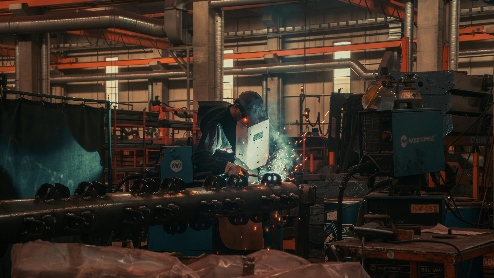

"You want to look at a factory and see more than just machines; you want to see the architecture of a new era. That is what an integrated industrial ecosystem is all about. It's about the conviction that we can build things better, faster, and cleaner than ever before."
The EV industry already has world-class engineers and suppliers. What's missing is a system that connects them clearly, reliably, at scale. That's the gap AXO Networks is built to solve.
We believe that manufacturing doesn't need more tools—it needs one system that works. AXO Networks brings everything into one place so production actually moves.
Teams were capable. Factories were ready. But production kept slowing down because:
So we built AXO Networks—a system where everything happens in one place.
One integrated platform that connects every part, every partner, and every decision in real-time.
The best systems don't get in the way. They remove friction. They make coordination effortless. They let people focus on building. That's what we're building at AXO Networks.
Bridge suppliers, OEMs, and capital
Streamline production workflows
Real-time supply chain visibility
Experienced leaders from manufacturing, technology, and operations coming together to build the infrastructure for EV manufacturing.
CTO
VP, Operations
VP, Sales
Transparent information for better decisions
Faster production cycles through coordination
Building reliable partnerships across the ecosystem
If you're building, supplying, or financing—AXO Networks gives you the system to do it with clarity and speed.